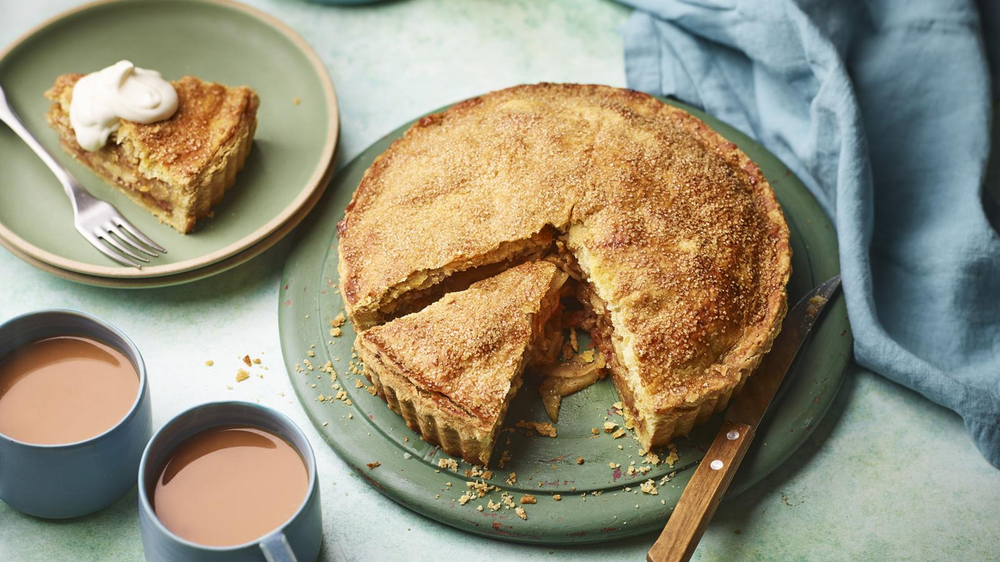

Home
Vegan Apple Pie

Ingredients
For the flaky pastry
- 450g/1lb plain flour
- 1 tsp fine salt
- 30g/1oz caster sugar
- 180ml/6fl oz olive oil
- 30g/1oz cooked sweet potato, cooled
For the apple filling
- 1kg/2lb 4oz apples, peeled and cored (keep the peel), flesh cut into 2mm slices
- 120g/4½oz caster sugar
- 2 tsp ground cinnamon
- 1 tsp vanilla bean paste
- ½ lemon, finely grated zest and 1 tbsp juice only
- 28g/1oz cornflour
For the baking glaze
- 100ml/3½fl oz soy milk
- 1 tbsp golden syrup or agave syrup (20g/¾oz)
- 25g/1oz cooked sweet potato, cooled and mashed
- pinch xanthan gum (optional)
- 5g caster sugar (optional)
To finish
- demerara sugar, for sprinkling
- vegan ice cream or cream, to serve
Method
- Prepare the flaky pastry by mixing the flour, salt and sugar together in a large bowl. Add the oil and use a silicone spatula or your hands to mix it into the flour. The oil should coat all the flour.
- Add the sweet potato along with 75ml/2½fl oz cold water and mix until the dough just comes together. Don't overmix because the dough will start to separate and become more difficult to handle.
- Place two-thirds of the pastry dough between two sheets of baking paper then roll out into a large disc until it is 3-4mm/⅛in thick and about 30cm/12in in diameter. Roll out the remaining one-third of pastry between two sheets of baking paper into a smaller 25cm/10in disc that is 3mm/⅛in thick, and set aside.
- Use the larger disc of pastry to line a 23cm/9in tart tin by removing the top sheet of baking paper and gently placing the tin on top of the pastry as a guide. Use a small sharp knife to trim the pastry around the tin, allowing for at least a 3cm/1¼in border, then remove the tart tin. Use the bottom sheet of baking paper to help flip the pastry gently into the tin, then carefully ease into the shape of the tin with your fingertips leaving any excess overhanging.
- Chill the pastry in the fridge for 15 minutes, then use the tip of a small knife to ‘dock' the base with a few pricks, about 2cm/¾ in apart, to stop the base from puffing up.
- If blind-baking the pastry (see recipe tip), preheat the oven to 190C/170C Fan/Gas 5. Scrunch up some baking paper, then unfurl it and press into the pastry-lined tart case and fill it with rice or baking beans. Bake for 18 minutes or until nicely golden. If the edges are browning too early, cover them with a piece of kitchen foil. Remove and allow to cool.
- To prepare the filling, either chop the apple peel finely by hand or blend in a small food processor. Set aside.
- Add the sliced apples to a large bowl with the sugar, cinnamon, vanilla, lemon juice, zest and cornflour and toss the apples gently until everything is combined. Leave to stand for 20 minutes to macerate.
- To make the glaze, blend together the soy milk, syrup and sweet potato along with the xanthan gum and sugar, if using, with a stick blender or food processor. Pour into a shallow saucepan and bring to the boil over a high heat for 2 minutes. Strain the mixture through a very fine sieve and leave to cool.
- Arrange the finely chopped apple peels on the cooked pastry base, then gently layer the sliced apples on top, stacking to fill all the gaps. There will be some liquid leftover from the apples, so stir to agitate any settled cornflour and drizzle it slowly over the pie. You can push the apples into a slight domed shape, if you like.
- Brush the overhanging edge of the pie crust with water, then place the smaller disc of pastry over the apples and press the edges together. Trim and crimp the edges as you like. Heat the oven to 200C/180C Fan/Gas 6.
- Brush the baking glaze across the top of the pastry and sprinkle some demerara sugar on top for a tantalising crunch. Use a sharp knife to cut some steam holes – I like one in the centre then six in a little burst radiating from it.
- Bake for 20 minutes, then rotate and bake for another 20–25 minutes, until golden-brown all over.
- Remove from the oven and leave to stand for at least 15 minutes. Serve warm with a scoop of vegan ice cream.